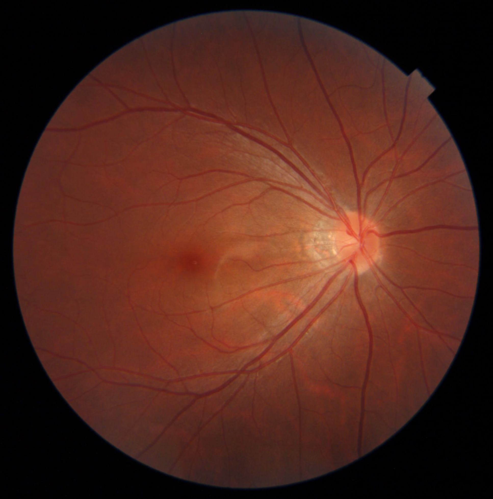

Fundus Image 1 | 1024px | Bilinear Downscale | Bilinear Upscale
Higher resolutions capture more information, making it easier to analyze fine structures. Lower resolutions can highlight patterns while reducing storage needs. Scaling methods also impact how well details are preserved.
For example, a 1024x1024 JPEG image compressed with 85% quality might appear worse than an uncompressed 768x768 image due to compression artifacts. Experiment to observe how resolution and scaling methods affect image quality.